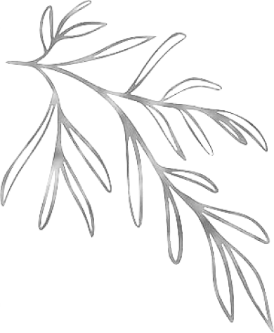
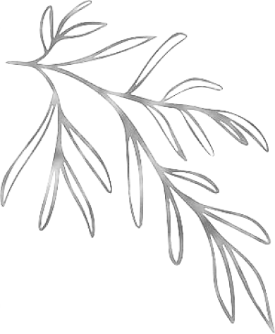
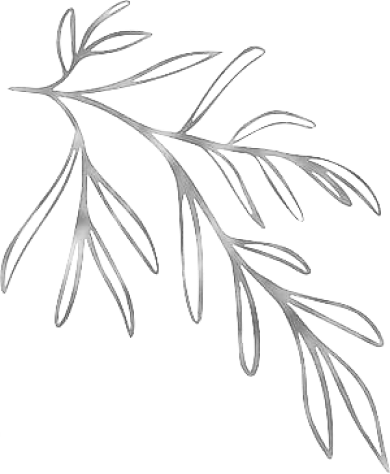
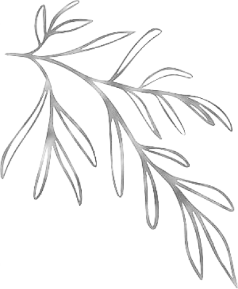

 

The tree canopy blocks out much of the sunlight in deciduous forests, especially in summer, making the foraging opportunities rather sparse. Spring and fall, however, offer many edible options, from early wild herbs like ramson and sweet woodruff, to late summer's selection of berries and edible flowers, to autumn's wealth of mushrooms, fruit, and nuts.